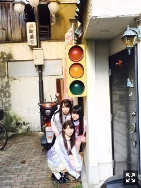
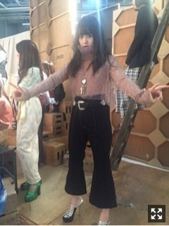
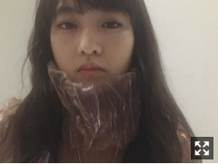

| 2017/02 18 Sat | 伊藤万理華 わらった顔がきらい。762回目 |
おひさしぶりです、
ライブまであと2日。
おしらせ！
装苑×文化学園スペシャルトークショー Presented by パナソニック「衣類スチーマー」
http://soen.tokyo/sp/fashion/news/soen170214.html
27日、れもんらいふの千原徹也さんと
トークイベントに参加します〜
いいんだろうか、、
文化学園の皆さま、装苑読者の皆さま、
ファッション、デザインに興味がある皆さま
ぜひぜひ来てください！
2月20日 non-no
2月23日 BRODY
発売中のMdN連載のお相手は
写真家の川島小鳥さんです。
今回は池袋PARCOで開催していた写真展
「ファーストアルバム」にて対談しました。
銀杏BOYZさんのCDジャケット、
未公開のものがたくさん並んでいた！
渋谷PARCOでやってた写真展「明星」
も見ていたので嬉しかった〜
乃木坂に入る前から
川島さんの連載を見ていました。
親近感があって懐かしく感じるのに
並んでいてもいつ撮ったのかわからない。
これ、ほんとに10年分なの？
と疑ってしまう。幻想的です。
撮ってもらってる時間は少ししか
味わったことないけど波長が合う瞬間
とっても楽しいんだろう。

17thシングル、アー写で着ている
トップス(インナー、ネックレス含む)は
OkayというHATRAさんとヌケメさんが
つくった新しいブランドなのですが、、
あーこれ衣装として着る機会あったらいいなあ
と密かに思ってたらスタイリストさんが
たまたま！私に！用意してくれてた！
イッチー流石過ぎます


アー写と実際じゃ質感が違って見える。
集合写真の私のドヤ顔
やばいなにあれおもしろい
金属の粉をプリントしてるそうです。
ピンク緑紫水色みたいな、、
良い色が絶妙に混ざってるのね
素晴らしいすなあ
あ
20なんてただの数字でした！！
まりか